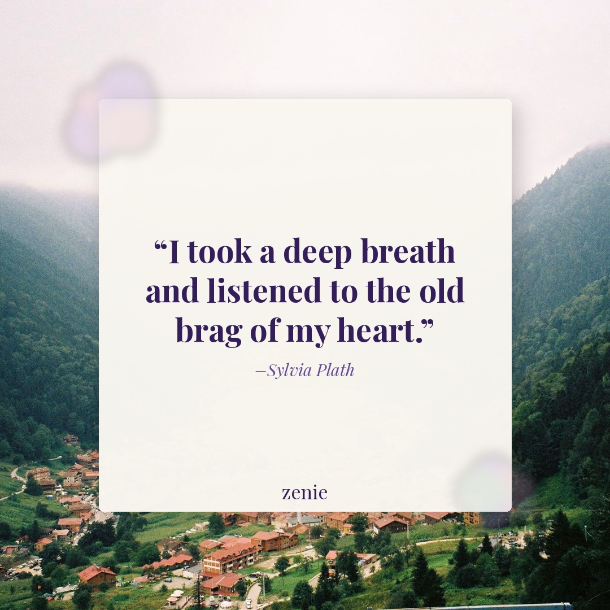
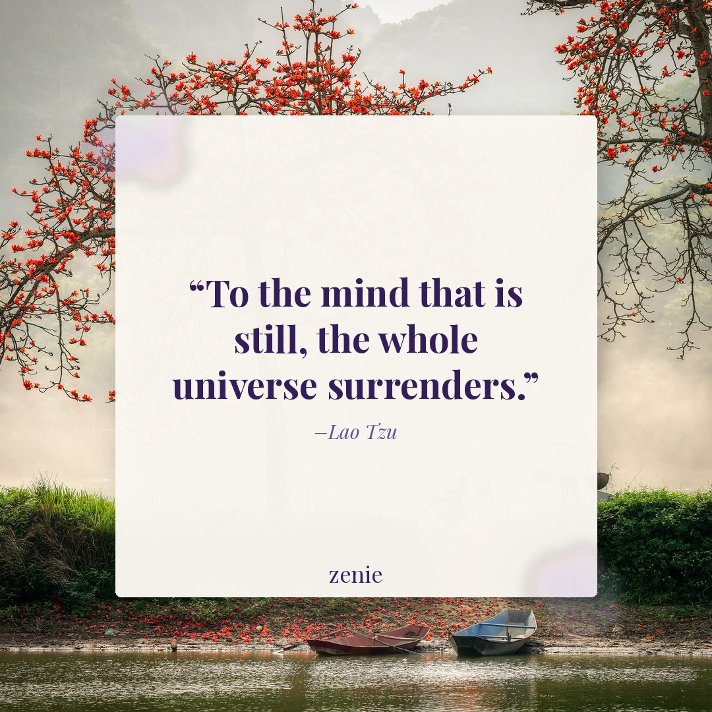

Meme 1
She didn't want a whole breakthrough. She just wanted to write for five minutes. 😭 Tonight's prompt: what's the version of yourself you keep putting off becoming — and what are you actually waiting for?
Best time: Monday 10 AM–12 PM PST
1. MEME LIBRARY EXHAUSTED: All 33 library clips have been used. Both memes are SKIPPED. Add new clips to meme_library/clips/ and register them in meme_library/library.json.
2. REPOST URLs MISSING: Web search could not find Instagram reel URLs. Both reposts need real instagram.com/reel/ links before the publish Action runs. Suggested creators: @_lisaolivera and @alex_elle.
She didn't want a whole breakthrough. She just wanted to write for five minutes. 😭 Tonight's prompt: what's the version of yourself you keep putting off becoming — and what are you actually waiting for?
Best time: Monday 10 AM–12 PM PST

FB: Sometimes the most radical thing you can do is slow down and listen to yourself — really listen. ✨
Tonight's prompt: what is your heart telling you right now that your mind keeps talking over? Write without editing.
Best time: Tuesday 7–9 PM PST (Facebook only)
Hypothesis: Using the Plath aphorism_plate because literary quotes in the 12–16 word range earn strong saves in the cohort (per @thegoodquote and @yung_pueblo patterns), and the October reflective season amplifies introspective content; testing whether a recognized literary voice outperforms 'Unknown' attribution we've leaned on lately.
Creator: @_lisaolivera ⚠️ UNVERIFIED — confirm creator against the reel before posting
URL: ⚠️ URL NOT FOUND — web search could not surface direct Instagram reel URLs this ...
Credit: @_lisaolivera ⚠️ UNVERIFIED
I kept wondering why I kept ending up in the same place. Turns out, I hadn't written it down yet.
Prompt: what's a pattern in your life you keep noticing — in friendships, relationships, or your own reactions — that you've never actually sat down to examine? Write about it today.
Best time: Wednesday 6–8 PM PST
Hypothesis: Using confession_then_turn (admit the pattern, then the reframe) because accounts like @thebirdspapaya and @_lisaolivera earn the highest comment rates in the cohort on this shape; 'I kept ending up in the same place' admission should prompt replies from people who recognize themselves.
She's different now. 🌙 Journal prompt for tonight: what's one belief about yourself that you held six months ago that you no longer carry? Write about what changed it.
Best time: Thursday 10 AM–12 PM PST

FB: When did you last just… sit with yourself, without an agenda? No scroll, no task list, just you and your thoughts. 🍂
This week's prompt: describe the last time you felt truly still inside — what were you doing, and what did that stillness tell you? Save this one to come back to.
Best time: Friday 6–8 PM PST (Facebook only)
Hypothesis: Running a prompt_card with a Lao Tzu stillness quote in October because autumn content historically outperforms summer in the journaling niche; testing whether a prompt framed around stillness (rather than growth/action) earns more saves than recent action-oriented quotes.
Creator: @alex_elle ⚠️ UNVERIFIED — confirm creator against the reel before posting
URL: ⚠️ URL NOT FOUND — web search could not surface direct Instagram reel URLs this ...
Credit: @alex_elle ⚠️ UNVERIFIED
The hard thing isn't starting the journal. It's writing the thing you've been avoiding.
Prompt: what's one thing you've been avoiding writing about, and why? You don't have to write it today — but write about the avoidance.
Best time: Saturday 12–2 PM PST
Hypothesis: The 'write about the avoidance' angle names a universal journaling blocker within a confession_then_turn frame; should earn above-median comments on FB because people are likely to reply with the thing they're avoiding, giving the CTA a natural emotional hook.